창원 정장 가족사진 — 온 가족이 같은 색을 입는 날의 마음
2026-10-22 발행
창원 정장 가족사진을 찾으시는 분들은 대개 옷 걱정부터 하십니다. "저희는 정장을 입을 일이 없어서요." 그런데 정장 가족사진은 옷을 잘 입는 사진이 아닙니다. 온 가족이 같은 색을 입고 같은 자리에 서는 날입니다. 그 하루가 사진이 되면 옷은 잊히고 표정이 남습니다.
정장을 입으면 사람이 달라집니다. 어깨가 펴지고 걸음이 느려지고 말수가 줄어듭니다. 평소에 허리를 조금 굽히고 다니시던 아버지가 재킷을 입고 나오시면 등이 곧게 펴집니다. 저는 그 순간을 기다렸다가 사진으로 남깁니다. 상남동 스튜디오에서 첫 셔터를 누른 뒤로 같은 일을 하고 있습니다.

첫 사진은 여덟 사람입니다. 남성 넷은 검정 턱시도에 나비넥타이를, 여성 넷은 검정 롱드레스를 입었습니다. 배경은 베이지 벽과 높은 아치 창입니다. 창으로 들어온 빛이 오른쪽 어깨를 따라 흐릅니다. 색을 검정 하나로 줄이면 눈이 옷을 보지 않고 얼굴을 봅니다.
대가족 사진에서 어려운 것은 인원이 아니라 배열입니다. 키 순서로 세우되 부부는 붙여 세우고, 앞줄은 앉고 뒷줄은 서고, 맨 뒷줄은 반 걸음 옆으로 비키게 합니다. 이 세 가지만 지키면 열 명도 한 프레임에 들어갑니다. 사진이 답답해지는 것은 사람이 많아서가 아니라 얼굴이 겹쳐서입니다.
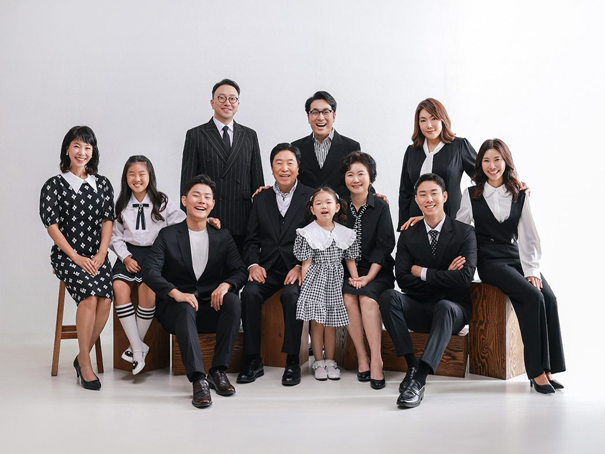
두 번째는 세 대가 모인 열한 명입니다. 나무 큐브를 계단처럼 놓아 높낮이를 만들었습니다. 할아버지와 할머니가 가운데 앉으시고 그 뒤로 아들딸이, 앞에는 손주들이 자리했습니다. 세대가 한 화면에 있으면 사진을 보는 사람이 자기 자리를 찾게 됩니다. 아이는 할머니 무릎 옆에, 사위는 맨 끝에. 이 배치는 가족마다 다르고, 그래서 촬영 전에 가족 관계를 꼭 여쭙습니다.
배경 색은 옷과 반대로 고릅니다. 검정 옷에는 회청색이나 짙은 회색이 잘 맞습니다. 검정 위에 검정을 두면 사진이 무거워지고, 밝은 회색 위에 검정을 두면 옷이 떠 보입니다. 다만 배경과 옷의 밝기 차가 크면 얼굴에 그림자가 생기므로 조명을 한 단계 더 올립니다.
검정이 부담스러우신 분께는 네이비나 차콜을 권합니다. 검정보다 조금 부드럽고, 사진에서는 거의 같은 무게로 보입니다. 어머니가 검정 드레스를 꺼리시면 짙은 남색이나 회색 원피스도 좋습니다. 중요한 것은 색의 이름이 아니라 가족이 같은 방향의 색을 입는 것입니다. 한 사람만 흰색을 입으면 그 사람이 사진에서 혼자 떠 보입니다.
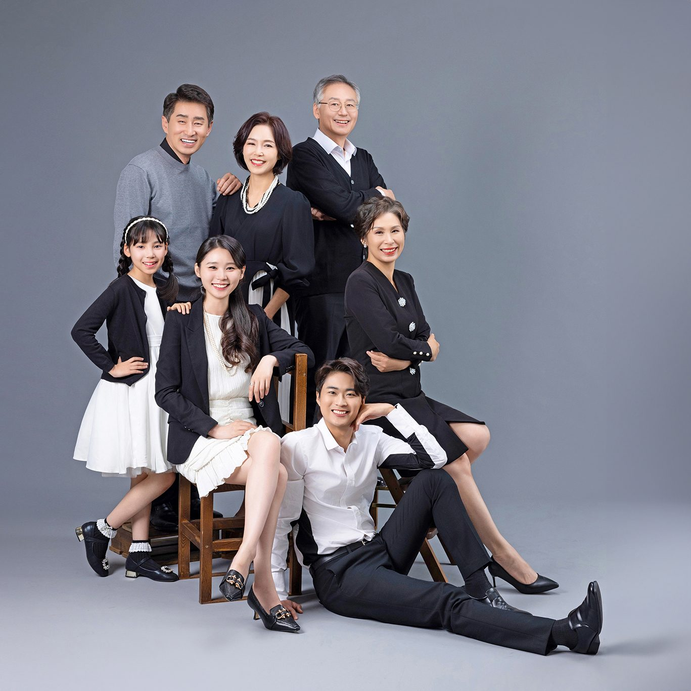
세 번째는 일곱 명입니다. 회청색 배경 앞에 세대가 섞여 앉고 섰습니다. 앞줄에 앉은 청년이 사진의 아래쪽을 잡아 주어 전체가 안정됩니다. 단체 사진에서 아래가 비면 사진이 떠 보입니다. 그래서 앞줄에는 늘 앉는 사람을 두고, 그 사람의 무릎 높이를 기준으로 뒷줄을 맞춥니다.
아이가 있는 가족은 순서를 바꿉니다. 아이가 가장 잘 웃는 시간은 촬영이 시작되고 이십 분쯤 뒤입니다. 그때 아이 컷과 전원 컷을 먼저 찍고 어른들 컷은 그다음에 찍습니다. 순서를 지키지 않으면 마지막에 아이가 지쳐서, 정작 온 가족이 함께한 사진에서 아이만 울고 있게 됩니다.
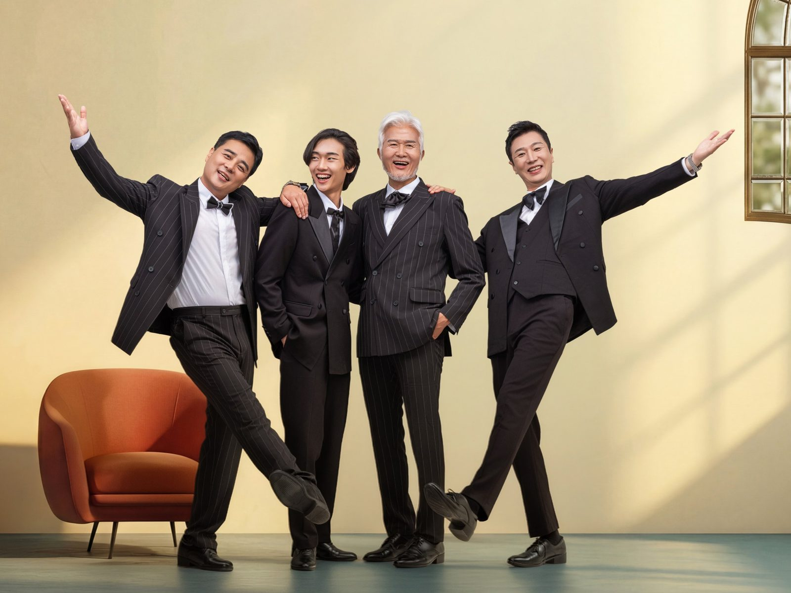
네 번째는 남성들만 찍었습니다. 정장을 입고 나란히 서면 처음에는 다들 굳습니다. 그때 "한 사람씩 팔을 뻗어 보세요"라고 말씀드리면 서로를 보면서 웃음이 터집니다. 그 웃음이 한 번 나오면 이후 컷이 훨씬 편해집니다. 가족사진에서 가장 좋은 장면은 대개 이렇게 준비가 풀린 직후에 나옵니다.
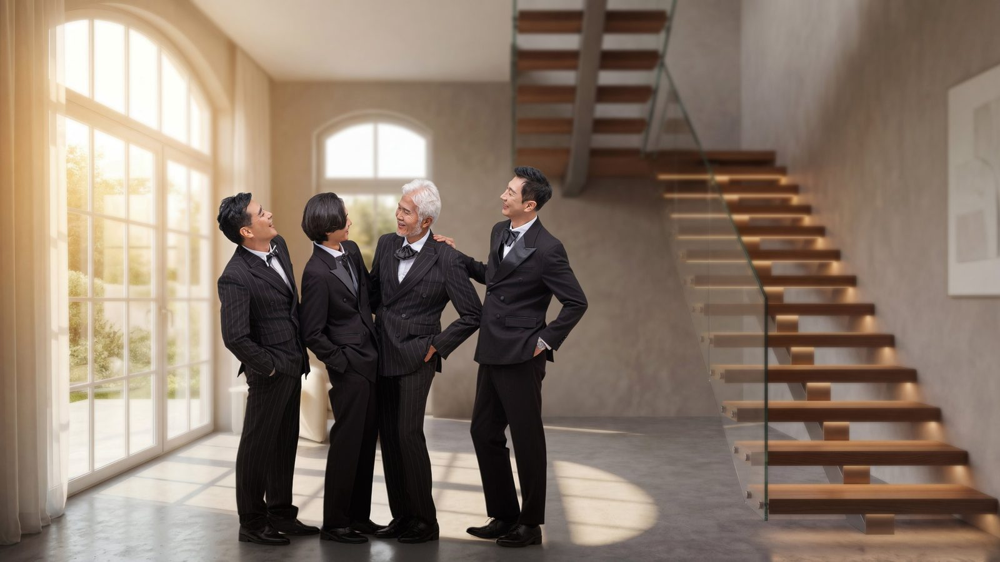
다섯 번째는 계단과 복도입니다. 옷을 갈아입히지 않고 자리만 옮겨도 열 장이 서로 다른 사진이 됩니다. 아치 창 앞, 계단, 복도, 벽 하나. 대가족일수록 이동 동선을 미리 정해 두어야 시간이 새지 않습니다. 저는 촬영 전에 어느 자리에서 어떤 컷을 찍을지 순서를 종이에 적어 둡니다.
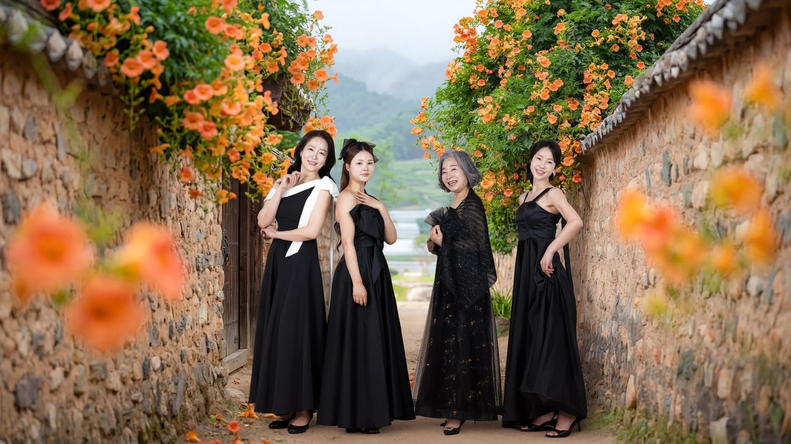
여섯 번째는 야외입니다. 돌담 위로 능소화가 내려앉은 자리에서 여성들만 찍었습니다. 검정 드레스가 주황빛 꽃 앞에서 유난히 또렷해집니다. 야외는 실내와 빛이 다릅니다. 구름이 지나가면 얼굴의 그림자도 함께 움직이니 같은 자리에서 여러 장을 찍고 가장 좋은 빛을 고릅니다.
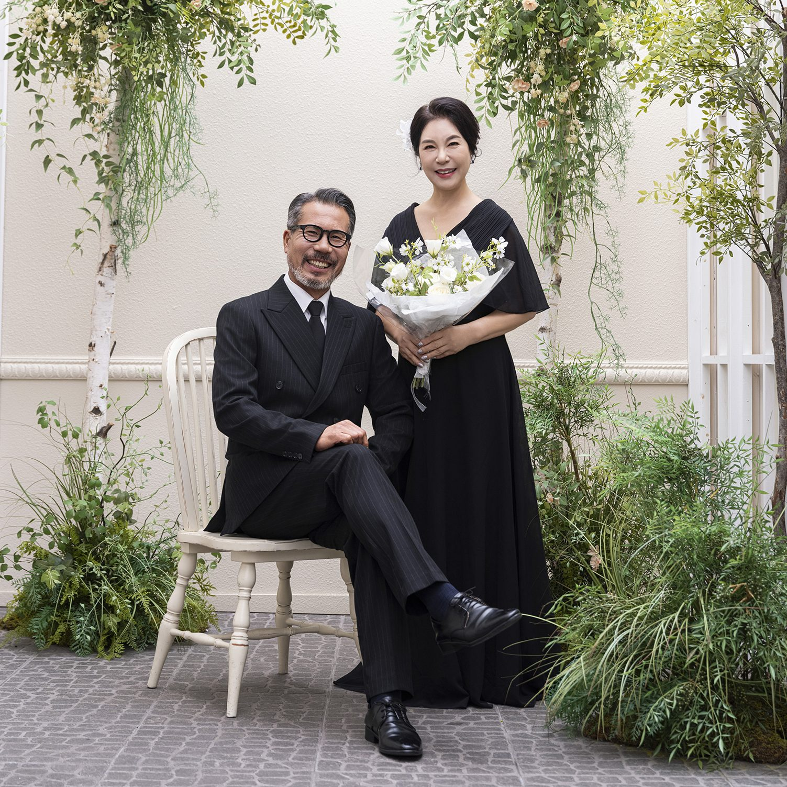
일곱 번째는 부모님 두 분만의 컷입니다. 가족사진을 찍으러 오셨는데 이 컷이 가장 좋았다고 하시는 분이 많습니다. 자녀들은 잠깐 뒤로 물러나고 두 분만 남습니다. 서로를 보게 하면 사십 년, 오십 년의 표정이 나옵니다. 말없이 손을 잡게 하는 것만으로 충분할 때가 많습니다.
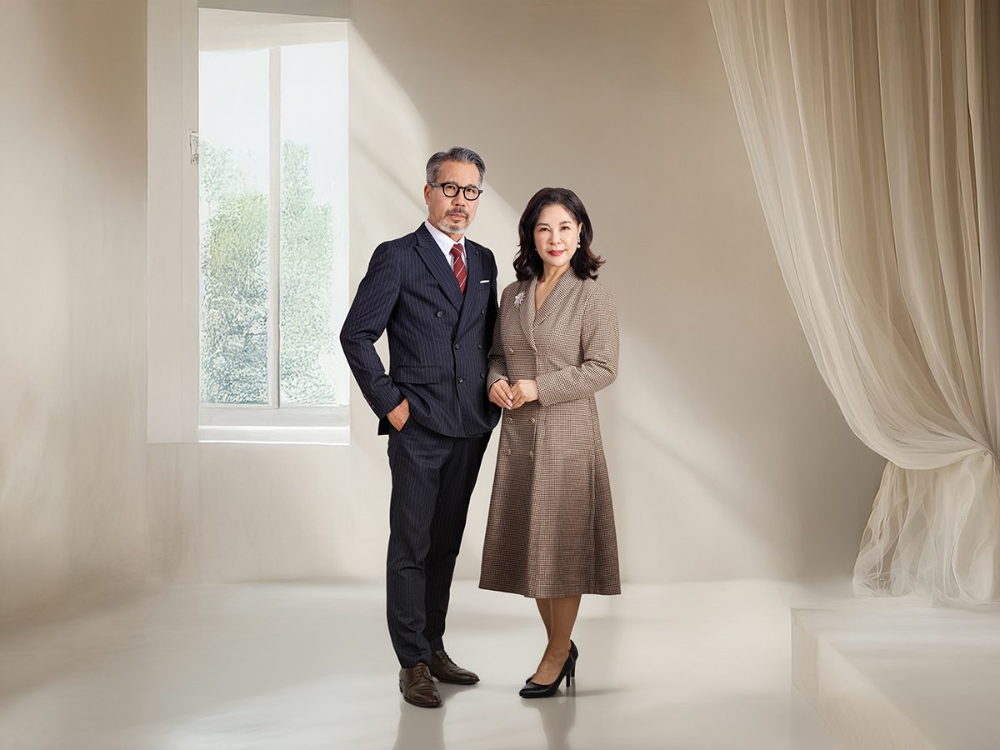
여덟 번째도 두 분입니다. 어르신 컷은 창가에서 찍습니다. 창을 등지지 않고 옆으로 세우면 얼굴에 그림자가 지지 않습니다. 남편은 네이비, 아내는 베이지처럼 한쪽은 어둡게 한쪽은 밝게 맞추면 두 사람이 한 덩어리로 뭉치지 않고 각자의 자리를 갖습니다.
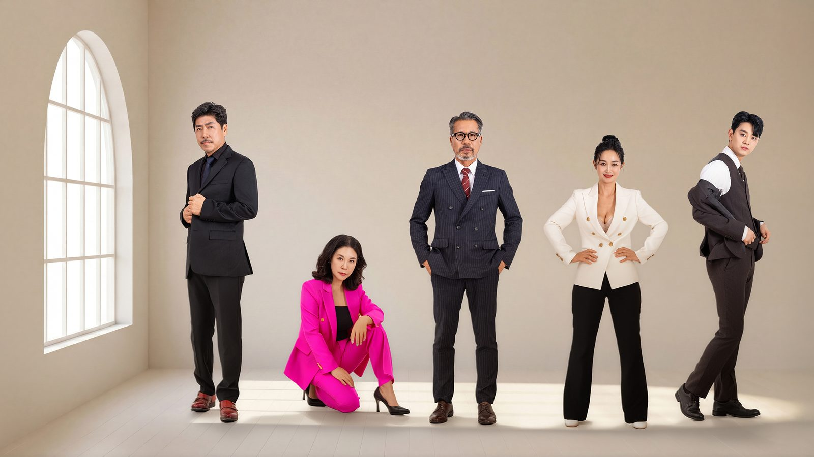
아홉 번째는 색을 하나 넣은 컷입니다. 나머지가 검정과 흰색일 때 한 사람이 자주색이나 짙은 초록을 입으면 그 사람이 사진의 중심이 됩니다. 가족사진에 주인공이 필요할 때 쓰는 방법입니다. 결혼을 앞둔 사람, 칠순을 맞은 어머니, 처음 입사한 아들. 이유는 무엇이든 좋습니다.
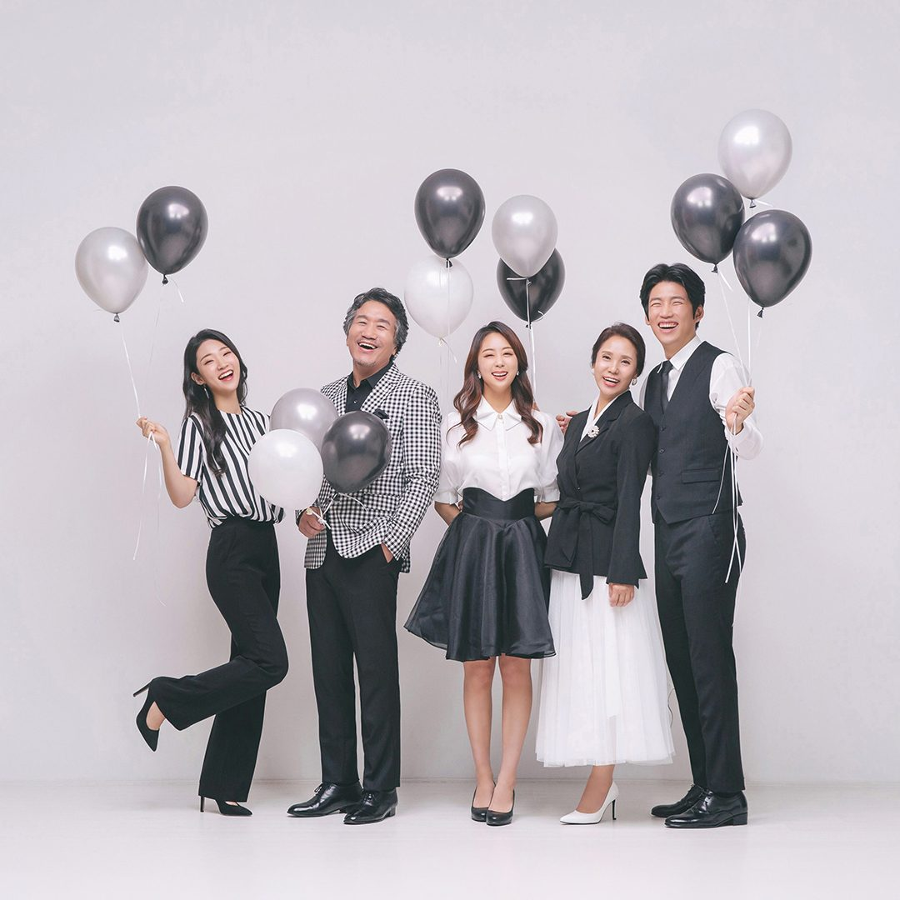
열 번째는 풍선 컷입니다. 정돈된 사진을 다 찍은 뒤에 가벼운 컷을 찍습니다. 풍선을 들고, 팔을 뻗고, 장난을 칩니다. 순서를 바꾸면 처음부터 흐트러져서 정면 컷을 건지기 어렵습니다. 그래서 가벼운 컷은 언제나 마지막입니다.
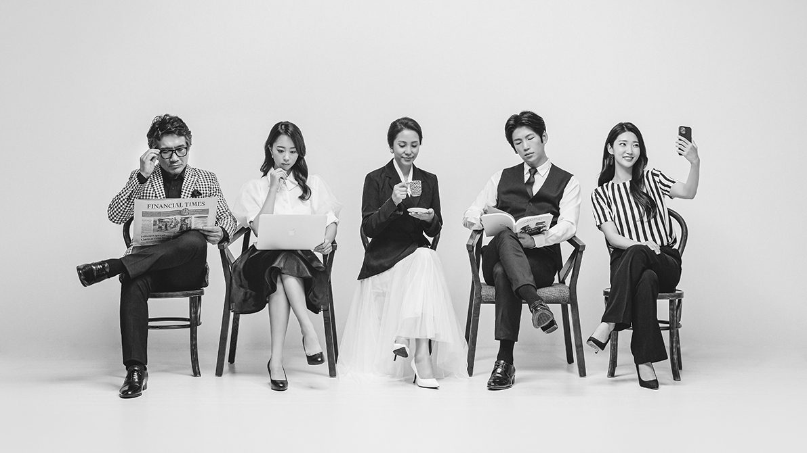
열한 번째는 조금 우스운 컷입니다. 신문을 펴고, 휴대폰을 보고, 옆 사람 어깨에 기대는 척합니다. 가족사진은 잘 나오는 사진만 남기는 것이 아니라 그날의 가족이 어떤 사람들이었는지를 남기는 일입니다. 이 컷을 액자에 넣는 분도 있습니다.
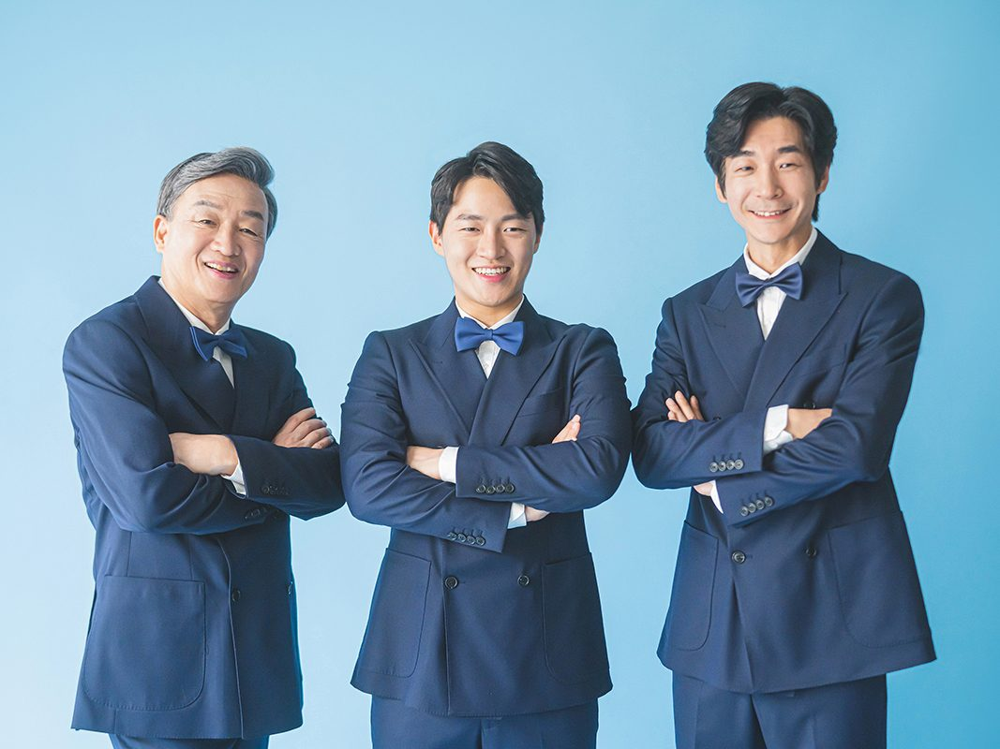
마지막은 파란 수트를 맞춰 입은 세 사람입니다. 검정으로 시작해 파랑으로 닫으면 같은 촬영인데 사진첩이 두 권처럼 느껴집니다. 정장은 어른들의 옷이 아닙니다. 아들이 아버지의 재킷을 빌려 입고, 딸이 어머니의 목걸이를 빌려도 좋습니다. 옷이 맞으면 마음도 그 옷을 따라갑니다.
의상은 스튜디오 의상실에서 대여합니다. 검정과 네이비, 차콜 정장과 드레스, 아이들 옷까지 준비되어 있습니다. 인원과 사이즈를 미리 알려 주시면 촬영 전에 맞춰 둡니다. 처음 오시는 날 옷장 앞에서 서로를 보며 웃는 시간도 촬영의 일부입니다.
사진을 고르신 뒤에는 액자를 함께 보시는 분이 많습니다. 수입 원목으로 액자를 직접 만들기 때문에 나무 색을 사진 앞에 놓고 고를 수 있습니다. 검정 옷을 입은 사진에는 짙은 호두색이나 검은 원목이 잘 맞고, 회색 배경 사진에는 밝은 참나무가 잘 맞습니다. 거실 벽 색까지 생각하시면 나중에 후회가 없습니다.
창원 정장 가족사진은 상남동 롯데빌딩 2층에서 찍습니다. 예약과 상담은 전화 055-287-8022 또는 카카오채널로 하시면 됩니다. 온 가족이 같은 색을 입고 한 줄로 서는 날, 사진은 그날의 마음을 대신 기억합니다.
사랑이야기 스튜디오 창원점 / 주소: 경남 창원시 성산구 원이대로 652, 상남동 롯데빌딩 2층 / 전화: 창원점 055-287-8022, 의령점 055-574-3706 / 홈페이지: lovestorykim.com / 인스타그램: @lovestorychangwon / 운영: 김작가
자주 묻는 질문
Q. 정장과 드레스는 준비해 가야 하나요?
A. 스튜디오 의상실에서 대여합니다. 검정·네이비·차콜 정장과 드레스, 아이들 옷까지 준비되어 있습니다. 인원과 사이즈를 미리 알려 주시면 맞춰 둡니다.
Q. 열 명이 넘는 대가족도 한자리에 담을 수 있나요?
A. 가능합니다. 나무 큐브로 높낮이를 만들고 앞줄은 앉고 뒷줄은 서게 해 얼굴이 겹치지 않도록 배열합니다. 촬영 전에 가족 관계를 알려 주시면 자리를 미리 정해 둡니다.
Q. 아이가 어려서 가만히 있지 못하는데 괜찮을까요?
A. 괜찮습니다. 아이 컷과 전원 컷을 먼저 찍고 어른 컷을 나중에 찍습니다. 아이가 움직이는 동안 나오는 사진이 오히려 자연스러운 경우가 많습니다.

오시는 곳
사랑이야기창원점
- 주소 경남 창원시 성산구 원이대로 652, 상남동 롯데빌딩 2층
- 전화 055-287-8022
- 영업시간 오전 10:00 ~ 오후 7:00
- 예약 전화 상담 · 카카오톡 채널
- 주차 건물 지하 주차장
김작가사진이야기 의령
- 주소 경남 의령군 궁류면 청정로 1188
- 전화 055-574-3706
- 영업시간 오전 10:00 ~ 오후 7:00
- 예약 전화 상담 · 카카오톡 채널
- 주차 전용 주차장
이 글에 한마디
댓글창을 준비하고 있습니다. 그동안 궁금한 점은 카카오채널로 남겨 주시면 바로 답변드립니다.
카카오채널로 한마디 남기기